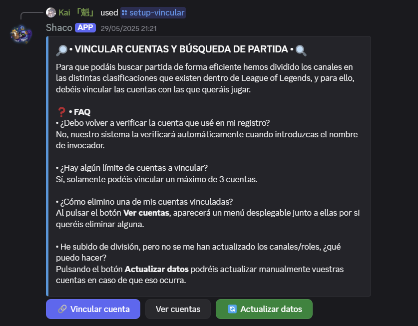
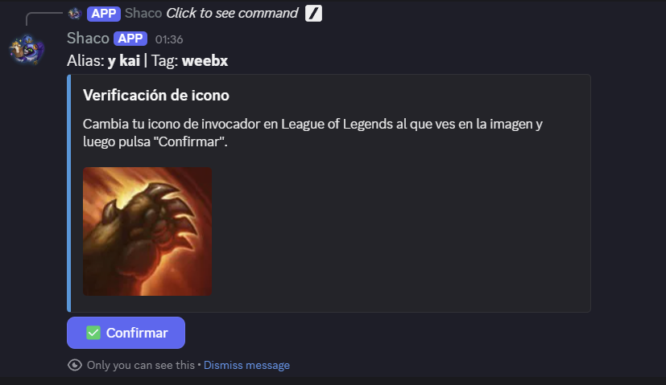
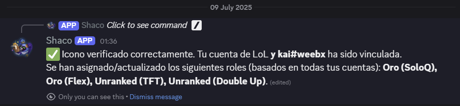
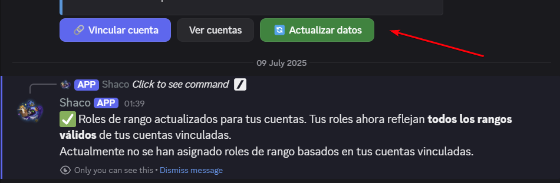
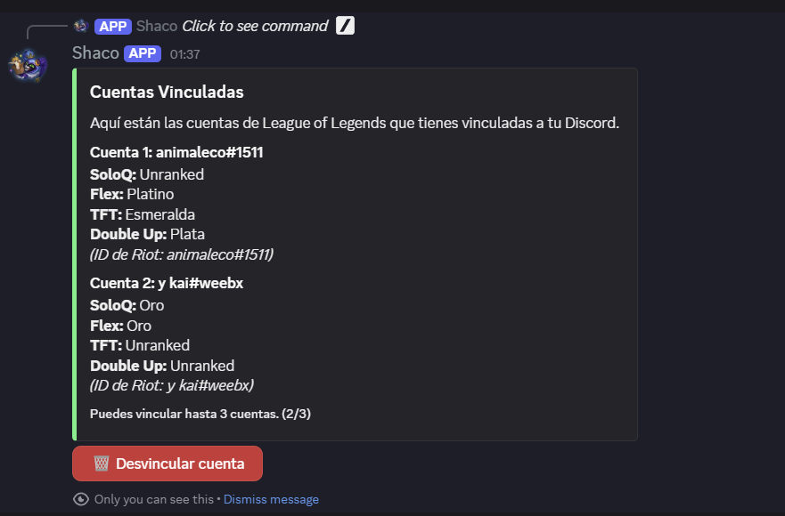
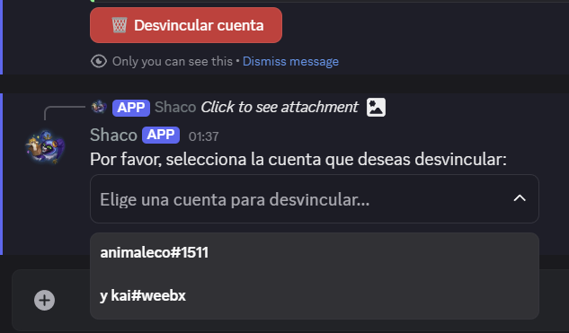
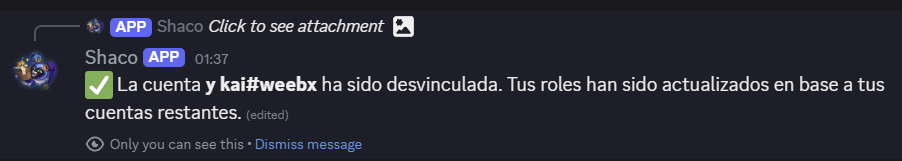

RankSync is a Discord bot that allows users to link their League of Legends and Teamfight Tactics accounts to automatically receive updated rank roles on their Discord server.
Users initiate the linking process with the /vincular cuenta button, enter their Riot ID, and verify account ownership by changing their summoner icon. Once verified, their ranks are queried, and Discord roles are automatically assigned.
Command and Input Modal:
Icon Verification:
Confirmation and Role Assignment:
Users can refresh their ranks and roles at any time to reflect changes from their recent games.
Users can view all Riot accounts linked to their Discord and have the option to unlink any of them.
  Developed with Node.js and Discord.js, utilizing the Riot Games API (via TeemoJS) and SQLite for local data management.
Key functionalities: Secure account linking, ownership verification, dynamic Discord rank and role updates, support for multiple accounts per user.
The RankSync bot fully complies with Riot Games' Terms of Service and Developer Policies. It does not store sensitive user data, only PUUIDs and ranks necessary for core functionality. All Riot API operations are performed in accordance with established guidelines.
GitHub Repository: https://github.com/p-estor/ranksync-bot